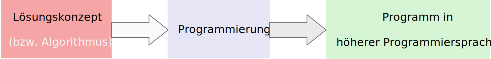

Arten der Programmierung


michael.eichberg@dhbw.de, Raum 149B
1.0.1
Einfache Programme (in Java) schreiben zu können
Grundlegende Werkzeuge für die Softwareentwicklung kennen lernen
Die Fähigkeit zum Computational Thinking (d. h. Denken wie ein Computer) zu erwerben
Die Fähigkeit zu erwerben komplexe Probleme mittels des Prinzips divide et impera (teile und herrsche) zu lösen
Ein paar grundlegende Begriffe der Softwareentwicklung kennen lernen
AI accelerates software development to breakneck speeds, but measuring that is tricky
[...]
AI-assisted development is now the norm - 78% of survey respondents currently use AI in software development or plan to in the next two years, up from 64% in 2023.
[...]
Bringing in AI may be accelerating software development toward blinding speeds. Stunningly, most executives (69%) indicate they are shipping software twice as fast as last year.
[...]
KI: Kannibalisieren sich die Programmierer?
Viele Branchen und Berufe wurden in den letzten Jahrzehnten durch IT umgekrempelt. Laut McKinsey und IDC trifft es wegen generativer KI jetzt die IT-Branche.
Laut McKinsey sollen in den kommenden drei Jahren bis zu 250 Milliarden US-Dollar in generative KI (GenAI) [...] investiert werden. Das betrifft vor allem die Codeerstellung, den IT-Helpdesk und die Testautomatisierung. [...]
Damit [GenAI] ließe sich die Produktivität der Softwareentwickler um bis zu 50 Prozent steigern. Das betrifft vor allem die Dokumentation, die Anpassung an neue Anforderungen und Refactoring. Das wird dazu führen, dass mehr Eigenentwicklung betrieben wird und weniger Standardsoftware zum Einsatz kommt. Dieser Trend werde dadurch verstärkt, dass Citizen-Developer demnächst nicht mehr Low-Code/No-Code nutzen, sondern nur noch in natürlicher Sprache und GenAI programmieren. [...]
Devs gaining little (if anything) from AI coding assistants
Code analysis firm sees no major benefits from AI dev tool when measuring key programming metrics, though others report incremental gains from coding copilots with emphasis on code review.
Many developers say AI coding assistants make them more productive, but a recent study set forth to measure their output and found no significant gains. Use of GitHub Copilot also introduced 41% more bugs, according to the study from Uplevel, a company providing insights from coding and collaboration data.
Verwenden Sie keine AI Assistenten, um die Konzepte einer Programmiersprache oder Bibliothek zu erlernen.
Später müssen Sie in der Lage sein, den Code, der von Assistenten generiert wurde, zu verstehen und zu validieren. Ohne ein tiefgreifendes Verständnis ist dies nicht möglich.
Die Aufgaben werden immer nur Dinge verlangen, die gelehrt wurden.
In der Klausur/Prüfung steht Ihnen auch kein AI Assistent zur Verfügung.
Programmieren bezeichnet das Formulieren eines Lösungskonzeptes (Algorithmus) in einer Programmiersprache.
Tiobe Index für August 2024
Programmiersprache |
Anteil |
|---|---|
Python |
18.04% |
C++ |
10.04% |
C |
9.17% |
Java |
9.16% |
C# |
6.39% |
JavaScript |
3.91% |
SQL |
2.21% |
Visual Basic |
2.18% |
Go |
2.03% |
Fortran |
1.79% |
Pypl Index für August 2024
Programmiersprache |
Anteil |
|---|---|
Python |
29.6% |
Java |
15.51% |
JavaScript |
8.38% |
C# |
6.7% |
C/C++ |
6.31% |
R |
4.6% |
PHP |
4.35% |
TypeScript |
2.93% |
Swift |
2.76% |
Rust |
2.58% |
Maschinensprachen (Zahlenkombinationen als Befehle)
(Eine Programmierung in Maschinensprache wird heute nicht mehr durchgeführt.)
Assemblersprachen (wie Maschinensprachen nur besser lesbar)
(Es gibt auch heute noch (vereinzelt) Anwendungsbereiche für Assemblersprachen.)
Höhere Programmiersprachen:
Prozedurale Programmiersprachen (z. B. C - noch immer sehr verbreitet)
Objekt-orientierte Programmiersprachen (z. B. C++, Java, ... - noch immer sehr verbreitet)
Funktionale Programmiersprachen (z. B. Clojure, F#, ...)
Logische Programmiersprachen (z. B. Prolog - nur noch in (sehr) speziellen Anwendungsgebieten)
Sprachen für spezielle Anwendungsgebiete (z. B. SQL oder Low-code Ansätze)
(Meist deklarative Sprachen, die für spezielle Anwendungsgebiete entwickelt wurden.)
Bei deklarativen Sprachen beschreibt man nicht wie etwas berechnet wird, sondern was berechnet werden soll. Maschinensprachen und Assemblersprachen sind imperative Sprachen. Höhere Programmiersprachen sind meist imperative Sprachen, aber es gibt auch deklarative Sprachen (insbesondere Prolog bzw. Datalog).
Seit ca. 10 bis 15 Jahren kann man beobachten, dass die Grenzen zwischen den verschiedenen Paradigmen immer mehr verschwimmen und einst rein objekt-orientierte Sprachen auch funktionale Elemente enthalten und umgekehrt.
Sprachen für spezielle Anwendungsgebiete werden auch Domain-specific Languages (DSLs) genannt.
Es ist zum Beispiel nicht möglich alle reellen Zahlen aufzuzählen - das Problem ist nicht lösbar und es kann kein Algorithmus angegeben werden!
Für eine Eingabe eine bestimmte Eigenschaft feststellen
Ist eine gegebene Zahl eine Primzahl?
Alle Daten mit einer gegeben Eigenschaft aufzuzählen
Zähle alle Primzahlen kleiner als 100 auf!
Eine gegebene Eingabe in eine Ausgabe zu transformieren.
Addition zweier gegebener Zahlen
Mathematisch
Java Programm bzw. Skript
long fak(long n){
if (n == 0) return 1;
else return n * fak(n-1);
}Ein Algorithmus löst eine Klasse von Problemen. Die konkrete Instanz wird über die Eingabeparameter/Parametrisierung festgelegt.
Die Beschreibung des Algorithmus bzgl. der Verarbeitungsschritte und (Eingabe-)Daten ist endlich und ermöglicht eine Ausführung mit endlichen Ressourcen.
Der Algorithmus führt bei gleichen Eingaben immer zu gleichen Ausgaben.
Der Algorithmus besteht aus einer Folge von elementaren (ausführbaren) Schritte. Diese werden vom Prozessor ausgeführt. Elementare Operationen sind z. B.:
einfache arithmetische Operationen wie Addition, Subtraktion, Division etc.
Vergleiche
Zuweisungen
etc.
Das Ergebnis liegt nach endlich vielen Schritten vor. (Dies bedeutet aber nicht, dass das Problem auch praktisch lösbar ist.)
Zeit und Platzbedarf sind endlich und in einem gewissen Rahmen abschätzbar.
Normalerweise versucht man den besten, schlechtesten und durchschnittlichen Fall zu bestimmen in Abhängigkeit von der Eingabegröße. (Insbesondere Thema des nächsten Semesters).
Diese Angaben erfolgen unabhängig von einer konkreten Implementierung bzw. Verwendung einer bestimmten Programmiersprache oder Hardware.
Jeder (Teil-)schritt führt bei gleichen Eingaben immer zu gleichen Ausgaben.
Nicht jeder Algorithmus, der die Eigenschaft der Determiniertheit erfüllt, ist auch deterministisch. Bei einem deterministischen Algorithmus führt jeder (Teil-)schritt bei gleichen Eingaben immer zu gleichen Ausgaben, aber dies muss (in bestimmten Fällen) nicht immer erfüllt sein und der Algorithmus kann dennoch determiniert sein.
Insbesondere im Bereich der Kryptographie basieren viele Algorithmen darauf, dass die Ver-/Entschlüsselung nur dann effizient durchführbar ist, wenn man den Schlüssel kennt. Ist der Schlüssel nicht bekannt, dann kann immer noch ein terminierender Algorithmus angegeben werden, der verschlüsselte Daten entschlüsselt, aber dieser ist nicht effizient in sinnvoller Zeit durchführbar.
Die Komplexität eines Algorithmus bestimmt ganz maßgeblich wofür dieser Algorithmus eingesetzt werden kann. Wir können zum Beispiel Algorithmen wie folgt unterscheiden:
konstante Komplexität (d. h. der Algorithmus benötigt unabhängig von der Größe der Eingabe immer gleich lange.)
logarithmische Komplexität
lineare Komplexität
quadratische Komplexität
exponentielle Komplexität (d. h. praktisch nicht anwendbar; häufig sucht man nach alternativen Algorithmen, die auf Heuristiken basieren. Zum Beispiel für das Erfüllbarkeitsproblem (Satisfiability) in der Aussagenlogik.)
Mathematisch (exakt)
BigDecimal e(int steps) {
BigDecimal e = BigDecimal.ZERO;
while (steps >= 0) {
e = e.add(
BigDecimal.ONE.divide(
new BigDecimal(fak(steps)
),
MathContext.DECIMAL128));
steps--;
}
return e;
}\(e\) steht hier für die eulersche Zahl.
In diesem Fall wurde folgende Implementierung der Fakultät verwendet:
import java.math.BigInteger;
BigInteger fak(int n) {
if (n == 0)
return BigInteger.valueOf(1);
else {
var bn = BigInteger.valueOf(n);
return fak(n-1).multiply(bn);
}
}Schreiben Sie in natürlicher Sprache einen Algorithmus, der eine beliebige natürliche Zahl testet ob diese eine Primzahl ist.
Achten Sie darauf, dass der Algorithmus die vorher diskutierten Eigenschaften selbiger erfüllt.
Beschreiben Sie die Komplexität Ihres Algorithmus.
Dienen der Kommunikation zwischen Menschen und sind häufig mehrdeutig. In vielen Fällen ist die Bedeutung eines Satzes abhängig vom Kontext.
Dienen der eindeutigen Beschreibung von Sachverhalten; sind präzise und eindeutig.
Können ggf. automatisch ausgewertet werden.
Programmiersprachen sind formale Sprachen zur Beschreibung von Algorithmen.
Systemprogrammierung
Anwendungsprogrammierung / Web-Entwicklung
Skriptsprachen
definiert welche Sätze in der Sprache gültig sind. Die Syntax wird durch eine Grammatik formal und präzise beschrieben.
definiert die Bedeutung der Sätze; wenn dies möglich ist. Nicht jeder syntaktisch korrekte Satz hat eine Bedeutung.
Häufig wird die Semantik „nur“ in einem Standard oder „sogar nur“ in durch eine Implementierung festgelegt.
Syntaktisch gültiger Satz
Sie geht nach Hause.
Syntaktisch gültig, aber semantisch falscher Satz
Tim schwimmt auf den Mond.
Syntaktisch ungültige Sätze
Sie fährt nach Hause in die Schule.
Tim geht in die Schule
Satz = Subjekt Prädikat Objekt "."
Subjekt = "Tim" | "Sie"
Prädikat = "geht" | "fährt" | "schwimmt" | "fliegt"
Objekt = "nach Hause" | "in die Schule" | "auf den Mond"Es gibt zahlreiche Varianten der EBNF (Extended Backus-Naur Form). Die grundlegenden Ideen und Konzepte sind jedoch überall gleich.
Beispiele für verschiedene Fehler in Java Programmen
int fak(long n){
if (n == 0)
return 1l // ';' expected
// ⇒ "Syntaktischer Fehler"
else
return n * fak(n-1);
// incompatible types: possible lossy conversion from long to int
// ⇒ "Semantischer Fehler"
}Die EBNF dient der Beschreibung kontext-freier Grammatiken.
Verwendung |
Notation |
Bedeutung |
|---|---|---|
Definition |
= |
|
Konkatenation |
, |
|
Terminierung |
; |
Ende der Def. |
Alternative |
| |
|
Optional |
[ ... ] |
0 oder 1mal |
Wiederholung |
{ ... } |
0 oder mehrfach |
Gruppierung |
( ... ) |
|
Kommentar |
(* ... *) |
|
Terminalsymbol |
"Terminal" |
Beispiel
Ausdruck =
Ziffer,
{ ("+" | "-"),
Ziffer };
Ziffer =
"1" | "2" | "3" |
"4" | "5" | "6" |
"7" | "8" | "9" |
"0";Die Beschreibung einer Programmiersprache in EBNF besteht aus einer Startregel und einer Menge von weiteren Regeln sowie Terminalen, die die Syntax der Sprache beschreiben. Die Terminalen sind die Basiswörter der Sprache („reservierte Wörter“).
Bei kontext-freien Sprachen kommt auf der linken Seite einer Regel genau ein Nichtterminal vor, auf der rechten Seite können beliebig viele Nichtterminale und Terminale vorkommen.
Was genau „kontext-frei“ bedeutet, ist Gegenstand fortgeschrittener Vorlesungen. Für den Moment reicht es zu wissen, dass dies gewisse Einschränkungen für die Regeln bedeutet. Diese Einschränkungen aber das Verarbeiten zumindest stark vereinfachen bzw. überhaupt erst ermöglichen.
Binärzahlen in Java
Folgend wird die Syntax von Binärzahlen (BinaryNumeral) in Java beschrieben.[1]
BinaryNumeral = "0", ("b" | "B"), BinaryDigits
BinaryDigits = BinaryDigit | (BinaryDigit [BinaryDigitsAndUnderscores] BinaryDigit)
BinaryDigit = "0" | "1"
BinaryDigitsAndUnderscores = BinaryDigitOrUnderscore {BinaryDigitOrUnderscore}
BinaryDigitOrUnderscore = BinaryDigit | "_"Welche der folgenden Zahlen sind gültige Binärzahlen in Java?
0b1010 0B1010_0
0b1_0_1_0 0B1010_0_
0B_1010 0b1010_0_1
0b1010_ 0_b101EBNF für einfache Ausdrücke
Erweitern Sie die EBNF für mathematische Ausdrücke, um die Möglichkeit Zahlen beliebiger Länge anzugeben und auch Ausdrücke (mathematisch korrekt) zu klammern. D. h. Ihre erweiterte Grammatik soll folgende Ausdrücke zulassen:
Bonus
Erweitern Sie die EBNF so, dass auch einfache Fließkommazahlen erlaubt sind (z. B. 1,2 oder 0,999). Achten Sie darauf, dass keine ungültigen Zahlen wie 1, oder 1,2,3 erlaubt sind.
Zu installieren (für den Anfang):
(mind.) Java 23 JDK (Java Development Kit)
https://adoptium.net/en-GB/temurin/releases/?version=23
oder
https://www.azul.com/downloads/?package=jdk#zulu
(Java 22 ist nicht ausreichend.)
Visual Studio Code inkl. Java Tools oder Eclipse Theia oder IntelliJ IDEA oder Eclipse
Ich verwende Visual Studio Code mit dem Java Extension Pack.